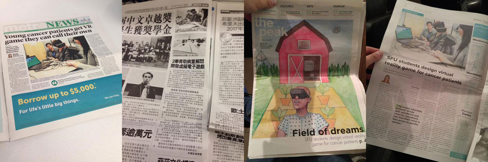

TYPE
Virtual Reality, Game Design
ROLE
Game Designer, Visual Designer, User Researcher
TOOLS
Maya, Unity, Adobe Illustrator
Farmooo is a virtual reality farm simulation game designed to help with pain distraction for teenage cancer patients during chemotherapy treatment. As a final academic research project, a friend and I partnered with the SFU Pain Studies Lab and BC Children’s Hospital to deliver a game to give back to the hospital as we have been treated there regularly when we were sick kids.

OBJECTIVE
With virtual reality technology growing, we seek an opportunity to create a game not for entertainment purposes, but something meaningful to help young teen cancer patients with the stress of chemotherapy treatment.
The project began with researching, reading, and learning about the medical and technical fields could I merge the domains of virtual reality and pain distraction. Next, I had to compile a list of features and related tools necessary to produce an end product of a game. Afterwards, I sketched out ideas including screens, user flows, and characters to get feedback, where assets were then modelled in Maya. Alongside with the creative aspect, I also prepared ethic forms and questionnaires for user study. Throughout an iterative process, a farm theme arose to allude to a concept of hope and growth. There is also a cow companion in the virtual world which symbolizes that patients are not fighting the disease alone, but there are others around them who are supporting them.
After implementing a minimal viable product, we presented the idea to the Oncology director at BC Children’s Hospital to get approval for user testing. The director was pleased with our effort and contribution to the hospital and allowed us to conduct user testing with outpatients. Ethics documents were compiled and we gathered 6 teenagers to help us test the game and give feedback.
At the end, I gathered all the feedback and coded the scripts with the help of two assistants. Based on the discovery of related themes (virtual reality contents, gameplay, controls and drawbacks), a report was written to discuss the takeaways to make improvements.

Moving forward, changes are to be made based on the feedback given by the teen outpatients so that another round of user testing can be done and eventually implement the game to the hospital.
This project has also been recognized across various press releases, at the Canadian Pain Society level, and was awarded Surrey’s Top 25 Under 25 most innovative project by the Surrey Board of Trade.

Press Releases
- Surrey Board of Trade: Surrey's Top 25 Under 25 Awards
- SFU: Surrey Board of Trade's Top 25 Under 25 Awards honour 18 SFU students, alumni
- LinkedIn: Surrey Board of Trade top 25
- SFU: Virtual farm game to help young cancer patients deal with treatment
- Vancouver Sing Tao: 2华青助病童解闷 开发虚拟电子游戏
- Metro Vancouver: B.C. virtual reality game helps young cancer patients with paitn
- BC Technology: SFU Students Create Virtual Farm Game to Help Young Cancer Patients Deal With Treatment
- Medical Xpress: Virtual farm game to help young cancer patients deal with treatment
- The Now: SFU Surrey students create game to ease discomfort for young cancer patients
- Vancouver Sun: Video game helps cystic fibrosis kids breathe, while virtual reality helps children with cancer cope with pain
- La Source: Video game could help teenage patients manage pain